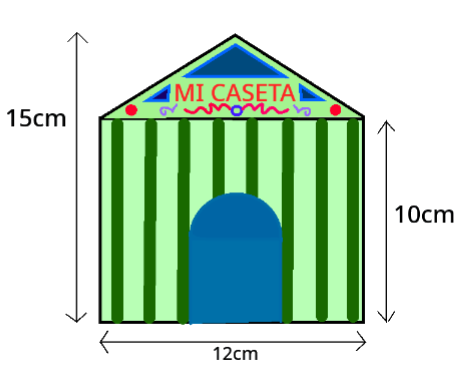

Ya has comprobado cómo los cuadriláteros son formas geométricas planas que pueden formar parte de nuestra caseta, bien en la forma del terreno, de las paredes, o el techo de la misma.
En este apartado vas a comprobar cómo hay otras figuras geométricas, llamadas polígonos, que pueden formar parte también de nuestra caseta.
1. Los polígonos en nuestra caseta.
Muchas de las figuras geométricas que aparecen en las casetas son formas muy conocidas y estudiadas dentro de las Matemáticas. Dentro de estas formas están los polígonos.
Los polígonos son figuras planas que están limitadas por un número de segmentos rectos (al menos tres) que encierran una región del plano. Los polígonos, por tanto, no tienen líneas curvas.
Hay muchos polígonos a nuestro alrededor, y por supuesto, como hemos dicho anteriormente, nos encontramos polígonos en las casetas de feria.
En la siguiente portada de caseta podríamos encontrar ejemplos de distintos polígonos como los que se muestran en la animación:
Elementos de un polígono
Del siguiente modelo de caseta, nos vamos a fijar en su portada.
Se trata de un polígono, ya que está formado por la unión de segmentos rectos, en este caso cinco.
Analizamos los distintos elementos que tiene este polígono:
Lado: cada uno de los segmentos que forman el polígono
Vértice: punto de contacto de dos lados
Diagonal: segmento que une dos vértices no consecutivos
Ángulo: ángulo que forman dos lados consecutivos
Clasificación de los polígonos
Ya has visto que en las casetas pueden aparecer polígonos. Hay muchos tipos de polígonos. Los polígonos se clasifican atendiendo a alguna de sus características.
Atendiendo al número de lados que tengan, podemos establecer una clasificación de los polígonos.
Veamos los polígonos más comunes, según el número de lados:
Intenta localizar estos tipos de polígonos en la siguiente portada:
Cuando lo tengas claro, pulsa en la siguiente animación para ver el resultado:
Polígonos regulares e irregulares
Un polígono es regular si todos sus lados miden lo mismo y todos sus ángulos también.
Si no cumple alguna de las dos condiciones anteriores se llama semirregular y si no cumple ninguna de las dos condiciones, se llamaría polígono no regular, o irregular.
Así pues, podríamos determinar otra clasificación de los polígonos atendiendo a esta característica, y obtendríamos así polígonos regulares, semirregulares o no regulares.
Veamos estos tipos de polígonos en la portada de nuestra caseta:
Definición:
Poco o escaso.
Ejemplo:
Las entradas del concierto eran limitadas.
Definición:
Fragmento de la recta que está comprendido entre dos puntos.
Ejemplo:
Dibuja un segmento con la regla.
Lumen dice: ¡...y los polígonos regulares tienen más elementos!
Los polígonos regulares tienen unos elementos añadidos a los elementos comunes para todo tipo de polígonos. ¿Sabes cuáles son? Te los mostramos en el siguiente ejemplo de hexágono regular.
Centro: punto que está a la misma distancia de todos los vértices
Apotema: segmento que une el centro y el punto medio de un lado
Radio: segmento que une el centro y un vértice
2. Tomamos medidas para la caseta
Triángulos
Ya has visto cómo los triángulos aparecen con frecuencia en las portadas de las casetas.
Si necesitamos saber la superficie que ocupan, necesitaremos conocer su área.
El área de un triángulo es el producto de su base por su altura dividido entre dos.
El borde de ese triángulo, su perímetro, se calcula como la suma de sus tres lados.

Conocemos su base que mide 12 cm, y su altura la podemos calcular restando 15-10=5cm.
Luego el área pedida es A=(12x5)/2=30cm2
clavis dice ¿Quieres conocer una propiedad que tienen los hexágonos?
El hexágono regular es el único polígono regular donde el radio y el lado miden lo mismo.
Gracias a esta propiedad, conociendo solo uno de estos tres elementos: el lado, el radio, o la apotema, y utilizando el Teorema de Pitágoras, podríamos hallar el área y el perímetro del hexágono regular.
radio = lado
3. Manos a la obra y a calcular para fabricar nuestra caseta
Llega la hora de saber si eres capaz de calcular las áreas y perímetros de los polígonos que puedes utilizar para montar tu caseta.
Manejar estos cálculos te permitirá conocer el material necesario para construirla, pintarla, etc.
Así pues, vamos a diseñar un modelo de caseta y calcular las medidas que se esconden bajo sus formas geométricas.
Opción D: Personaliza tu modelo y calcula el gasto
Una vez vistos en los apartados anteriores varios ejemplos de diseño de portadas de caseta es turno de que diseñéis la vuestra.
Para la realización de la misma necesitaréis realizar el diseño en un FOLIO A4 a una escala 1:100.
RECORDATORIO: La escala 1:100 significa que un centímetro en el folio corresponde con un metro en la realidad.
Una vez tengamos el diseño tendremos que calcular la cantidad de metros cuadrados de pintura de cada color que vamos a necesitar. Para ello, tendréis que exponer en el dibujo los diferentes polígonos que tenéis en vuestro diseño y calcular las áreas de todos ellos.
En la siguiente animación puedes escoger tu modelo de caseta personalizado. A continuación, debes realizar los cálculos necesarios para hallar la superficie de todas las formas geométricas que aparecen en tu maqueta.
Las dimensiones de los modelos son las siguientes:
Y las medidas de las formas geométricas que aparecen:
Sobre las escalas
Recuerda que en una escala 1:100 ocurre que:
-Un segmento que mida 1cm en la maqueta equivale a 100cm en la realidad (multiplicamos por 100), es decir, 1 metro
-Una región que tenga 1cm2 de área en la maqueta equivale a 10000 cm2 en la realidad (multiplicamos por 10000), es decir, 1m2


 Llega la hora de saber si eres capaz de calcular las áreas y perímetros de los polígonos que puedes utilizar para montar tu caseta.
Llega la hora de saber si eres capaz de calcular las áreas y perímetros de los polígonos que puedes utilizar para montar tu caseta.